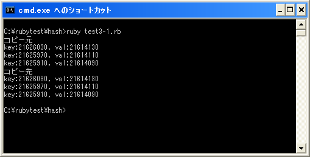

Hashクラス
ハッシュオブジェクトの元になっているクラスはHashクラスです。ハッシュオブジェクトを作成するにはHashクラスのクラスメソッドを使うこともできます。いくつか用意されていますので一つ一つ確認していきます。
Hash[key,value,...]
1つ目はクラスメソッドの[]を使用した形式です。
Hash[key,value,...]
ハッシュはキーと値のペアで1つの要素となりますが、この形式ではキーと値のオブジェクトを交互に指定していきます。そのため引数に指定するオブジェクトは必ず偶数個になります。
具体的には次のように記述します。
hash = Hash["Yamada", 34, "Katou", 28, "Endou", 18]
3つの要素を持つハッシュを作成しています。キーと値の組み合わせは("Yamada", 34), ("Katou", 28), ("Endou", 18)となります。
ただ、カンマでキーと値を区切って記述する方式は今後推奨されないようですので、「=>」を使ってキーと値を指定する方式を使う方がいいと思います。
Hash[key => value,...]
具体的には次のように記述します。
hash = Hash["Yamada" => 34, "Katou" => 28, "Endou" => 18]
作成されるハッシュオブジェクトは先ほどと同じです。
Hash.new([ifnone])
2つ目はクラスメソッドの「new」を使用した形式です。
Hash.new([ifnone])
空のハッシュオブジェクトを作成します。引数「ifnone」にオブジェクトを指定した場合は、存在しないキーを指定した場合に返されるデフォルトのオブジェクトを「nil」から変更する事が出来ます。(デフォルトの設定については次のページで詳しく確認します)。
具体的には次のように記述します。
hash = Hash.new()
要素が空のハッシュオブジェクトが作成されます。
Hash.new {|hash, key| ...}
3つ目はブロック付きのクラスメソッドの「new」を使用した形式です。
Hash.new {|hash, key| ...}
空のハッシュオブジェクトを作成します。存在しないキーを指定した場合に返されるデフォルトのオブジェクトはブロック内の処理が実行されて返されます。(デフォルトの設定については次のページで詳しく確認します)。
具体的には次のように記述します。
hash = Hash.new {|hash, key| hash[key] = "none"}
要素が空のハッシュオブジェクトが作成されます。上記ではデフォルトの値が「none」になるように指定しています。
Hash[hash]
4つ目はクラスメソッドの[]を使用した形式です。引数に他のハッシュオブジェクトを指定します。
Hash[hash]
引数に指定したハッシュオブジェクトに含まれるキーと値を持つ新しいハッシュオブジェクトが作成されます。この時、コピー元とコピー先のハッシュに含まれるキーのオブジェクトと値のオブジェクトは同じオブジェクトとなります。
具体的には次のように記述します。
hash = Hash["Yamada" => "Tokyo", "Katou" => "Nagano", "Endou" => "Aomori"] copyhash = Hash[hash]
上記ではハッシュオブジェクト「hash」とハッシュオブジェクト「copyhash」は同じ要素を持ちます。要素に含まれるキーと値は2つのハッシュで同じオブジェクトを参照します。
サンプルプログラム
では簡単なプログラムで確認して見ます。
#! ruby -Ku
require "kconv"
hash = Hash["Yamada" => "Tokyo", "Katou" => "Osaka", "Endou" => "Fukuoka"]
print(Kconv.tosjis("コピー元¥n"))
hash.each do |key, val|
print("key:", key.object_id, ", val:", val.object_id, "¥n")
end
print(Kconv.tosjis("コピー先¥n"))
copyhash = Hash[hash]
copyhash.each do |key, val|
print("key:", key.object_id, ", val:", val.object_id, "¥n")
end
上記のプログラムを「test3-1.rb」として保存します。文字コードはUTF-8です。そして下記のように実行して下さい。

ハッシュを元に別のハッシュを作成した場合、それぞれのハッシュに含まれるキーと値が同じオブジェクトを参照していることが確認できます。
( Written by Tatsuo Ikura )

著者 / TATSUO IKURA
初心者～中級者の方を対象としたプログラミング方法や開発環境の構築の解説を行うサイトの運営を行っています。